Next-generation AI translation for game and movie subtitles.
Powered by state-of-the-art OCR and superior context-aware engines, providing high-quality translation in over 100 languages.
A focused, professional tool that does one thing exceptionally well: translate anything on your screen in real time using state-of-the-art AI.
✨ The defining feature of version 4 ✨
Simple mode is designed for immediate operation – just pick your languages, position your overlays, and start translating.
Custom mode provides granular control over every aspect of the tool, allowing power users to fine-tune quality, performance, and cost.
Industry-first AI-powered text recognition. Handles stylised fonts and low-contrast backgrounds that break traditional OCR – at ~$0.00012 per screenshot.
Multiple Gemini models for top-quality, idiomatic, context-aware translation in over 100 languages. Supports everything from high-demand Asian scripts (Japanese, Chinese, Korean) to minority languages like Hawaiian, Irish, Luxembourgish, and Thai.
High-quality, context-aware translation for over 100 languages. Delivers elite precision for Japanese, Chinese, and European scripts, as well as minority languages such as Welsh, Icelandic, Maori, and Burmese. Context subtitles are provided free and don't count towards your quota.
Send up to 5 previous subtitles with every request. Maintains character names, grammatical flow, and narrative coherence across dialogue.
Real-time token-level analytics: cost per call, per minute, per hour, and cumulative cost. DeepL monthly quota tracked directly from the API.
In-memory LRU cache + optional file cache. Repeated phrases cost zero API credits – retrieved instantly from the disk.
Automatically scans the full screen for a set period to detect where subtitles appear, then locks the capture area.
Dynamically expands the OCR capture area to prevent edge-of-frame word truncation and AI hallucinations from tight crops.
Automatically overlays the translation directly onto the original subtitle area for seamless, immersive reading. Even with this option disabled, a PRO user can drag the target window manually over the subtitles.
Inject a custom instruction into every translation request. Define the tone, style, or game-specific context to ensure consistent character names and immersive dialogue.
Inject a custom instruction into every Gemini OCR call – ignore HUD elements, strip speaker names, focus on dialogue only.
Fully redesigned interface with Simple and Custom modes. Clean, responsive, and self-contained. Built-in High-DPI scaling ensures a perfectly crisp and consistent interface across all screen resolutions.
The advanced native RTL engine powered by PySide6. Flawless character shaping, cursive joining, and bidirectional rendering for Arabic, Hebrew, Pashto, and Persian. Punctuation and numbering are handled with pixel-perfect accuracy.
Unparalleled transparency with dual-layer logging. Short logs provide a quick overview of costs, while Long logs capture the entire API exchange – including system prompts, context subtitles, and raw model responses.
Comprehensive audit trail for every vision-based request. Track image metadata, token efficiency, and model latencies. Every recognition event is logged with its exact prompt, enabling precise debugging and cost monitoring.
Please distinguish between the GCT Software Licence and Third-Party API Costs:
Please review these technical requirements before proceeding:
The Simple mode gives you everything you need to start translating immediately.
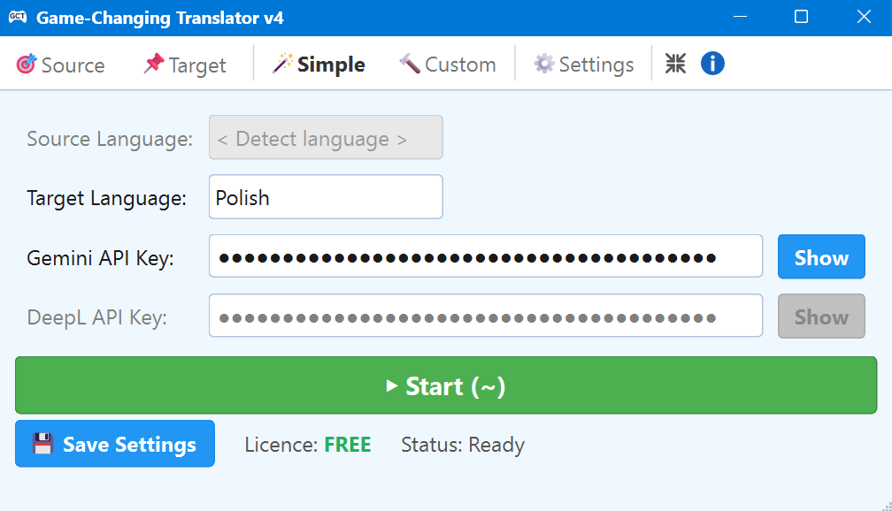
The Simple mode – your everyday starting point
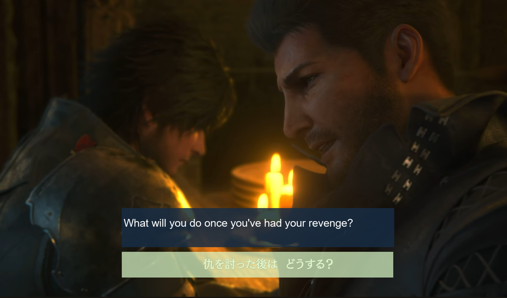
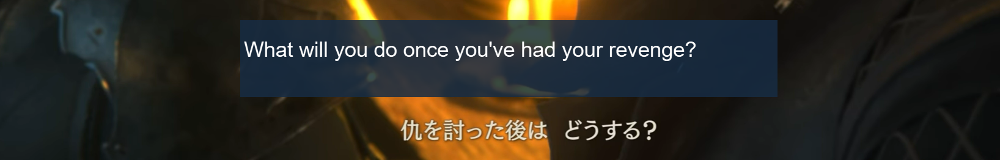
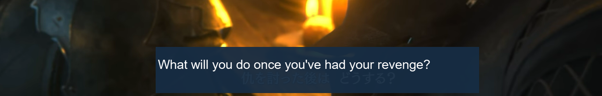
Enter the
Target Language
(your preferred output language). The
Source Language
is auto-detected in the Simple mode.
Paste your
Gemini API Key (mandatory)
and/or
DeepL API Key (optional)
The fields are masked – click Show to reveal. Saved with Save Settings or Alt+S.
Use the
Source
button to position and resize the capture window, and the
Target
button to place the translation overlay. Press the green
Start (~)
button or hit ~.
Switch between modes using the top tab bar. Simple mode is designed for hassle-free operation: settings tabs are hidden by default and all options use predefined, locked values optimized for performance – you only need to set your languages and keys. In Custom mode, the settings tabs are shown by default and all options are unlocked for full manual configuration. The application features full High-DPI awareness, automatically scaling its interface to remain perfectly crisp and consistent across any monitor resolution or DPI setting.
💡 In both Simple and Custom modes, you can toggle Settings on or off according to your preference.
💡 By clicking the / icon, you can hide or show the language and API key fields.
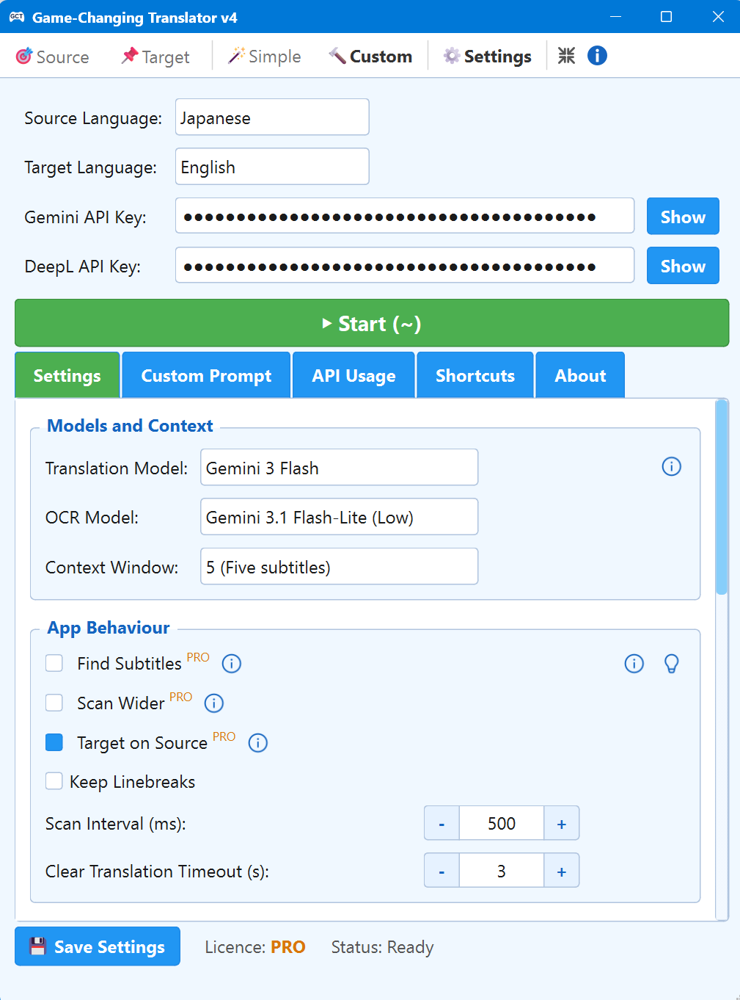
Custom mode – Settings sub-tab active
Source and Target open transparent overlay windows that you can move and resize to define your capture and translation areas directly on screen.
Shared between Simple and Custom modes. Select your source and target languages from the searchable dropdown menus. The Gemini API key is mandatory, as it powers the OCR (text recognition) engine. The DeepL API key is optional and only needed if you choose DeepL for translations.
Large green button (or ~ key). Launches the full OCR → translate → display pipeline. Press again to stop.
Settings · Custom Prompt · API Usage · Shortcuts · About – these panels are detailed below.
💡 Available in both modes:
In Simple, options are predefined and locked.
In Custom, they are fully configurable.
Choose AI models for OCR and translation independently, and set how much
previous dialogue the AI remembers between subtitle lines.
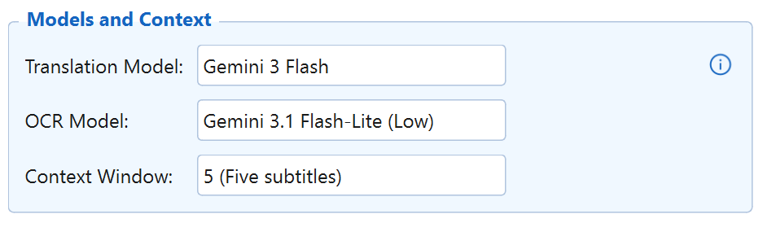
Models and Context – first group in the Settings tab
Selects the Gemini model used for translation.
Gemini 3.1 Flash-Lite is the fastest and most economical option. The premium Gemini 3 Flash model offers the most idiomatic translations, superior linguistic accuracy and better handling of rare language pairs.
To select the DeepL model, a PRO licence is required.
DeepL delivers high-quality, natural-sounding translations.
Its free tier offers a quota of 500,000 characters/month. Context subtitles sent to DeepL are free and don't count against your monthly limit.
Selects the Gemini model for text recognition. Gemini 3.1 Flash-Lite (Low) is recommended – it is twice as cheap as Gemini 3 Flash. Low resolution is sufficient, while Medium offers higher precision for non-European scripts at the cost of increased token usage.
Number of previous subtitles sent with every translation request (0–5). A window of 5 gives the AI full narrative context, dramatically improving pronoun consistency and idiomatic flow.
Control how the application captures, processes, and displays content.
PRO features are marked with PRO.
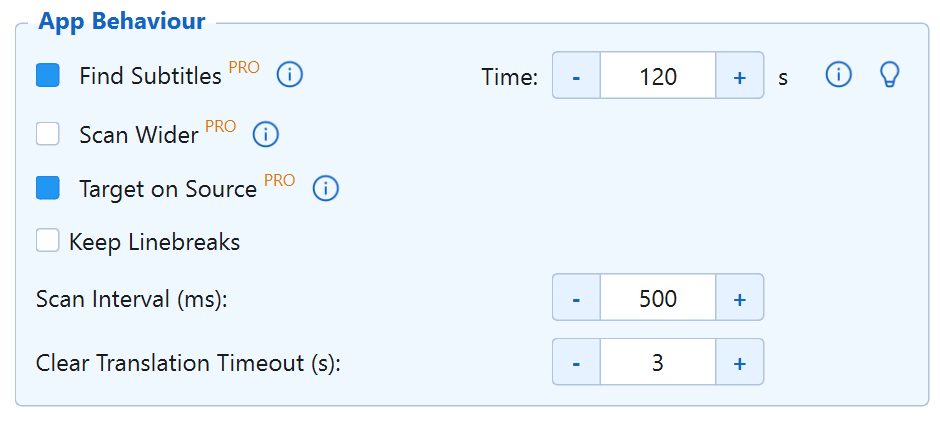
App Behaviour – second group in the Settings tab
Automatically scans the full screen for a set period to detect where subtitles appear, then locks the capture area. During the scan window (default 120 seconds), the frame continuously expands to fit the widest subtitle seen. Once the period ends, the frame stabilises at those maximum dimensions. You can adjust the scan time with the – / + buttons next to the checkbox.
Expands the captured area beyond its visible frame boundary before sending to Gemini OCR – by a configurable percentage (default 100%). This prevents edge words from being clipped and eliminates hallucinations caused by tight crops. The expansion is clamped to the actual screen dimensions.
Automatically positions the translation overlay directly over the source capture window, so the translation appears exactly where the original text is.
💡 Even when this option is disabled, a PRO user can drag the target window manually to any position – including directly on top of the original text.
Preserves the original line structure of multi-line subtitles in the translated output – essential for cinematic subtitles where dialogue from two different characters is displayed simultaneously using dashes.
Scan Interval (ms) – how often the screen is captured (default 500 ms). Clear Translation Timeout (s) – seconds before the overlay clears when source text disappears (default 3 s).
Customise the look of both overlay windows to blend with any game. Colour pickers are PRO-only – fonts and opacity are available to all users.
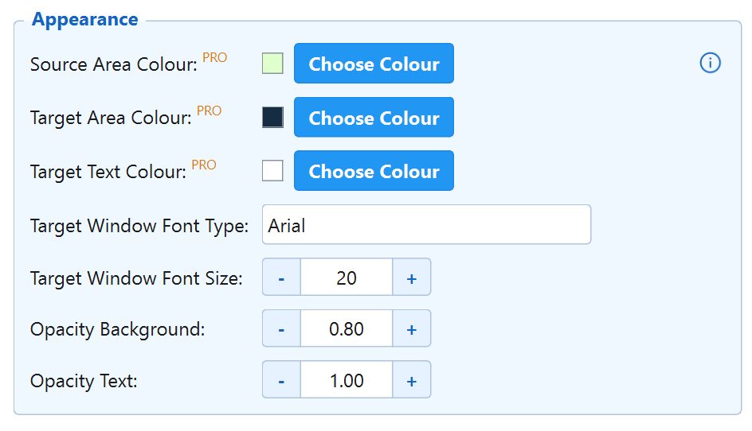
Appearance – third group in the Settings tab
Background colour of the source capture window. Click Choose Colour to open the native colour picker.
The background colour of the translation overlay window.
Font colour of the translated text in the overlay.
Enter any font installed on your system (e.g. Arial, Calibri). Adjust the size with – / +.
Set the transparency of the overlay background and text independently (0.0 = fully transparent, 1.0 = fully opaque). Ideal for overlaying text on dark subtitle bars.
File caching saves translations to disk – repeated phrases cost zero API credits. Debug logging captures the full OCR and translation pipeline for troubleshooting.
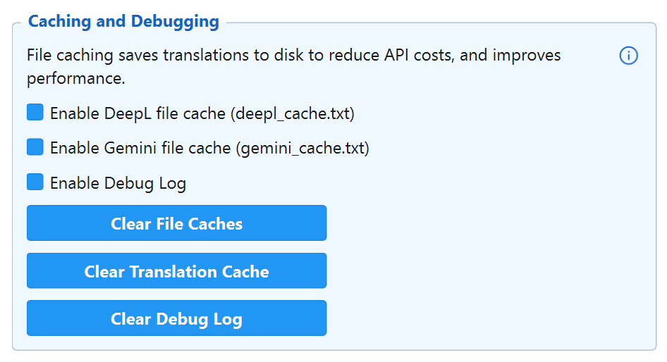
Caching and Debugging – bottom of the Settings tab
Saves all Gemini translations to gemini_cache.txt. When identical OCR text appears again, the cached translation is returned instantly – no API call made.
The same mechanism for DeepL, saved to deepl_cache.txt. Cache hits don't count against the monthly character quota.
Writes application status messages, thread events, API connection info, and error reports to translator_debug.log. This file captures operational diagnostics – not API call details (those are in the dedicated log files described in the API Usage section). Disable during normal gameplay for maximum performance.
Clear File Caches – wipes both cache files.
Clear Translation Cache – clears in-memory LRU only.
Clear Debug Log – empties the log file.
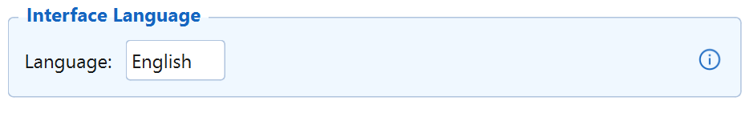
Interface Language – bottom of the Settings tab
Switch the application UI between English and Polish. Changes take effect immediately without restarting.
Inject custom instructions into every API call – for both translation and OCR. Prompts are saved to the disk and applied automatically once enabled.
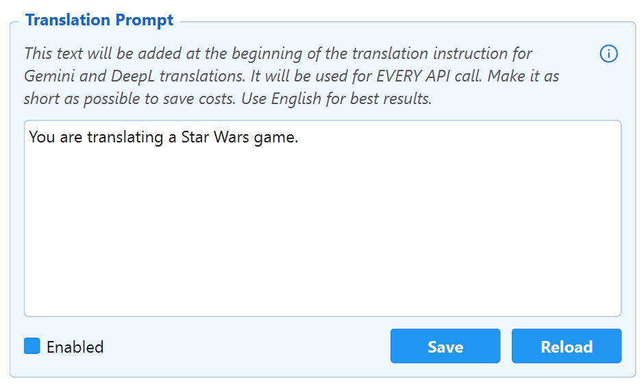
Translation Prompt – Custom Prompt tab
Prepended to every translation instruction sent to Gemini and DeepL. Use it to define tone, style, or game-specific context – e.g. "You are translating a Star Wars game."
Toggle the setting without losing your saved text. Save writes to custom_prompt.txt. Reload re-reads from disk – useful if you edit the file externally.
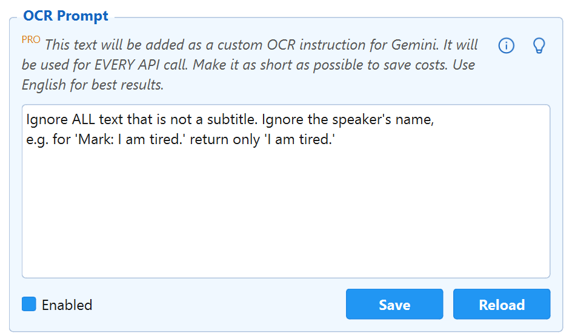
OCR Prompt – Custom Prompt tab
A custom instruction injected into every Gemini OCR request – separate from the translation prompt. Use it to filter noise, ignore HUD elements, or enforce correct reading of ambiguous characters.
The OCR Prompt gives you direct control over what Gemini reads from the screen. The example below shows it filtering a complex GTA-style game scene: despite a busy HUD with ammo counters, a minimap, and on-screen labels, Gemini returns only the dialogue subtitle – and strips the speaker’s name as instructed.
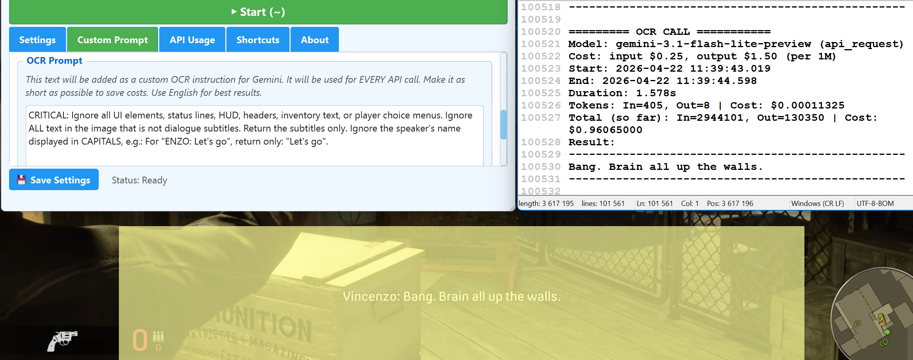
The OCR Prompt is injected into every Gemini OCR request as an additional instruction, on top of the standard transcription command. It is completely separate from the Translation Prompt. You can describe in plain English what Gemini should focus on or ignore – but results depend on the model's ability to follow instructions and will vary. This is a prompt-engineering exercise, not a deterministic setting: expect to experiment, refine, and test across different scenes before finding what works for your game. The prompt is saved to disk and reloaded automatically on startup.
Real-time, per-call cost tracking for every Gemini and DeepL request. The API Usage tab contains four panels – scroll through them in the order shown below.
Gemini_OCR_Short_Log.txt and Gemini_Translation_Short_Log.txt. Data will reset if these files are deleted. Cost tracking is provided for reference purposes only. You remain solely responsible for monitoring your own API usage and costs through your own Gemini or DeepL official billing account.
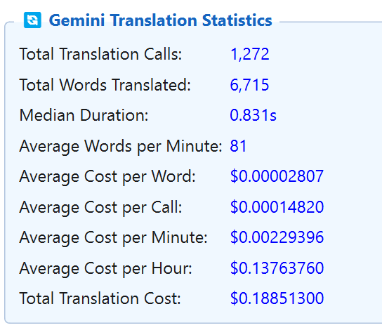
Panel 1 – Gemini Translation Statistics
Total calls, words translated, median duration, and average words per minute. The example shows 1,272 calls translating 6,715 words at $0.14/hour.
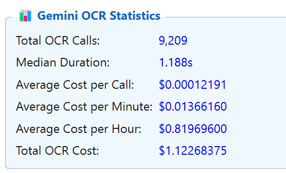
Panel 2 – Gemini OCR Statistics
9,209 OCR calls at a total cost of $1.12 (~$0.82/hour). Each call sends one screenshot to Gemini and receives the recognised text.
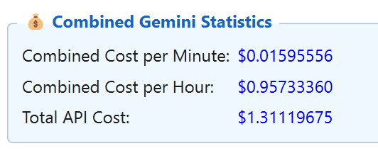
Panel 3 – Combined Gemini Statistics
Combines both Gemini pipelines into a single cost figure. The example shows $1.31 total at $0.96/hour – for all sessions with both OCR and translation active.
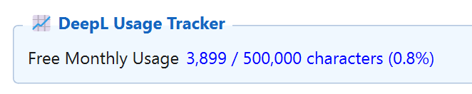
Panel 4 – DeepL Usage Tracker
DeepL's free tier allows 500,000 characters/month. The tracker queries your account balance live from the DeepL API. Context subtitles are free and don't count against this quota.
In addition to the on-screen statistics panels, the application writes four detailed log files to the installation directory. These files contain the complete record of every API call made during all sessions.
Gemini_OCR_Short_Log.txt
One entry per OCR call: model, cost rates, duration, token count, cumulative cost, and the recognised text result.
Gemini_OCR_Long_Log.txt
A full record including the complete request prompt (with OCR instructions and any custom OCR Prompt) and the raw API response.
Gemini_Translation_Short_Log.txt
One entry per translation call: model, cost rates, duration, token count, cumulative cost, and the translated text.
Gemini_Translation_Long_Log.txt
A full record including the complete translation prompt (system instruction + context subtitles + current subtitle) and the raw API response.
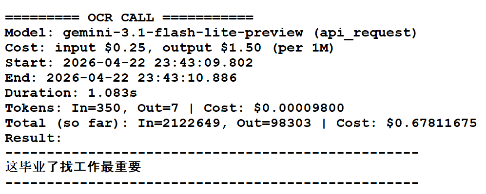
Example OCR log entry – Gemini_OCR_Short_Log.txt
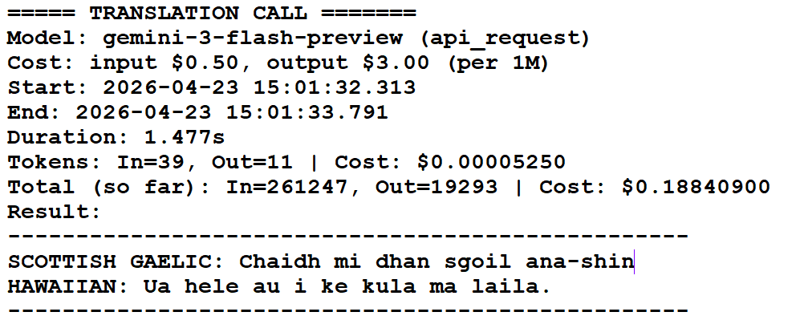
Example Translation log entry – Gemini_Translation_Short_Log.txt
All shortcuts are global – active even when the application window is minimised or behind a full-screen game.
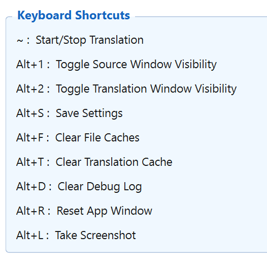
Shortcuts – visible in the Shortcuts sub-tab
Version information, one-click update checking, and PRO licence activation – all in the About sub-tab.
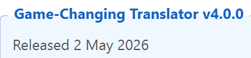
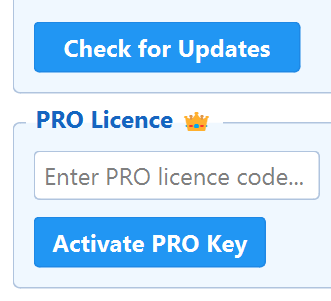
About tab – version, updates, and PRO activation
Displays the installed version (v4.0.0, Released 2 May 2026) for quick reference.
Queries the GitHub API for the latest release. If a newer version is available, it is downloaded to a staging directory and applied automatically.
Enter your PRO licence key and click Activate PRO Key to unlock all PRO features: DeepL, Find Subtitles, Scan Wider, Target on Source, colour pickers, and OCR Prompt.